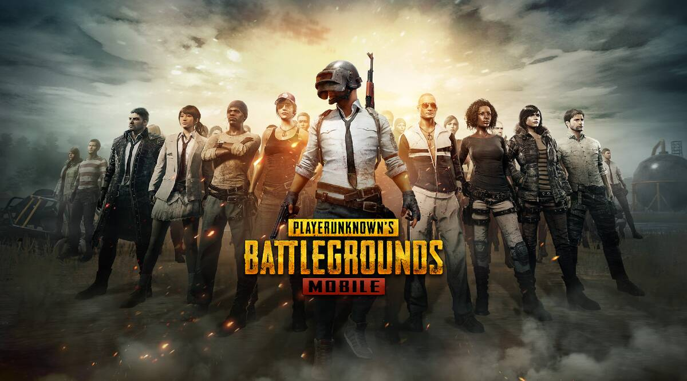
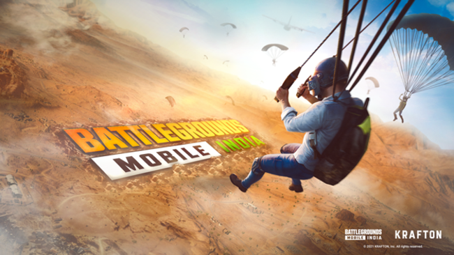

PUBG
As lakhs of PUBG lovers in India are waiting for the launch of Battlegrounds Mobile India, which is seen as Indian version of PUBG Mobile India, the game developer Krafton has posted a new teaser of Battlegrounds Mobile India on social media platforms, including Facebook.
It is expected that Krafton would soon announce the launch date of Battlegrounds Mobile India.
Notably, PUBG Mobile’s Indian version is available for pre-registration on Google Play Store since May 18. The latest teaser released by Krafton urges PUBG Mobile India lovers to go and pre-register for the game and get free rewards. The teaser, however, doesn’t reveal too many details about Battlegrounds Mobile India but it highlights the fact that users who pre-register for the game will get some rewards at the launch.
South Korean gaming company Krafton will relaunch the India version of its popular game - PlayerUnknown’s Battlegrounds (PUBG), for mobile users.
This will come in a new avatar called Battlegrounds Mobile India.
Krafton has not set a timeline for the launch of the mobile multiplayer game in the country.
 